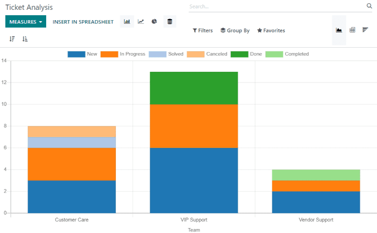
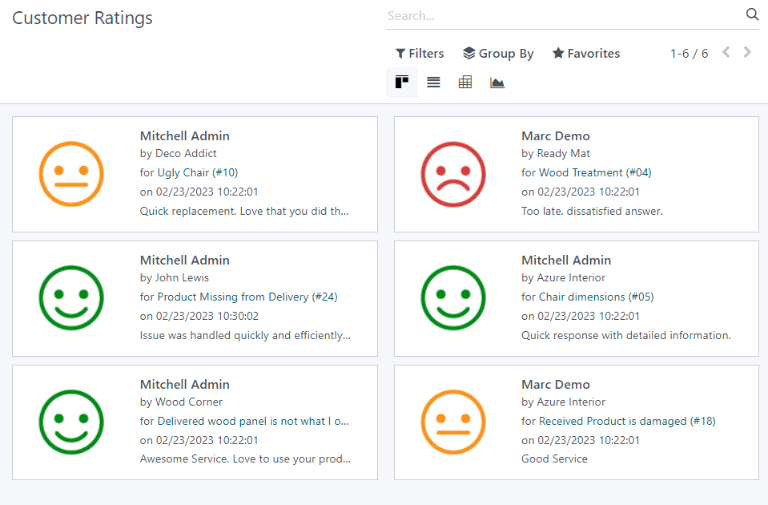

Reporting¶
Odoo Helpdesk includes several reports that provide the opportunity to track trends for customer support tickets, identify areas for improvement, manage employee workloads, and confirm when customer expectations are met.
Available reports¶
Details about the reports available in Odoo Helpdesk can be found below. To view the different reports, go to .
Ticket Analysis¶
The Ticket Analysis report () provides an overview of every customer support ticket in the database. This includes the number of tickets assigned among teams and individual users.
This report is useful in identifying where teams are spending the most time, and helps determine if there is an uneven workload distribution among the support staff. The default report counts the number of tickets per team and groups them by stage.
Alternative measures can be selected to track where the most time is spent at different points in the workflow. To change the measures used for the report that is currently displayed, or to add more, click the Measures button, and select one or more options from the drop-down menu:
Average Hours to Respond: average number of working hours between a message sent from the customer and the response from the support team. This is does not include messages sent when the ticket was in a folded stage
Hours Open: number of hours between the date the ticket was created and the closed date. If there is no closed date on the ticket, the current date is used. This measure is not specific to working hours
Hours Spent: number of Timesheet hours logged on a ticket. This measure is only available if Timesheets are enabled on a team, and the current user has the access rights to view them
Hours to Assign: number of working hours between the date on which the ticket was created and when it was assigned to a team member
Hours to Close: number of working hours between the date on which the ticket was created and the date it was closed
Hours to First Response: number of working hours between the date on which the ticket was received and the date one which the first message was sent. This does not include email sent automatically when a ticket reaches a stage
Hours to SLA Deadline: number of working hours remaining to reach the last SLA deadline on a ticket
Rating /5: number valued assigned to the rating received from a customer (Dissatisfied = 1, Okay/Neutral = 3, Satisfied = 5)
Count: number of tickets in total
Note
Working hours are calculated based on the default working calendar. To view or change the working calendar, go to the application and select .
SLA Status Analysis¶
The SLA Status Analysis report () tracks how quickly an SLA (Service Level Agreement) is fulfilled, as well as the success rate of individual policies.
By default, this report is filtered to show the number of SLAs failed, as well as the failure rate over the last 30 days, grouped by team.

To change the measures used for the report that is currently displayed, or to add more, click the Measures button, and select one or more options from the drop-down menu:
% of Failed SLA: percentage of tickets that have failed at least one SLA
% of SLA in Progress: percentage of tickets that have at least one SLA still in progress, and have not failed any SLAs
% of Successful SLA: percentage of tickets where all SLAs have been successful
Number of SLA Failed: number of tickets that have failed at least one SLA
Number of SLA Successful: number of tickets where all SLAs have been successful
Number of SLA in Progress: number of tickets that have at least one SLA still in progress, and have not failed any SLAs
Working Hours to Assign: number of working hours between the date on which the ticket was created and when it was assigned to a team member
Working Hours to Close: number of working hours between the date on which the ticket was created and the date it was closed
Working Hours to Reach SLA: number of working hours between the date on which the ticket was created and the date the SLA was satisfied
Count: number of tickets in total
Example
To see the number of tickets that were able to achieve the stated SLA objectives, and track the amount of time it took to achieve those objectives, click and .
To sort these results by the team members assigned to the tickets, select .
See also
Customer Ratings¶
The Customer Ratings report () displays an overview of the ratings received on individual support tickets, as well as any additional comments submitted with the rating.
Click on an individual rating to see additional details about the rating submitted by the customer, including a link to the original ticket.

Tip
On the rating’s details page, select the Visible Internally Only option to hide the rating from the customer portal.
The Customer Ratings report is displayed in a kanban view by default, but can also be displayed in graph, list, or pivot view.
See also
View and filter options¶
On any Odoo report, the view and filter options vary, depending on what data is being analyzed, measured, and grouped. See below for additional information on the available views for the Helpdesk reports.
Note
Only one measure may be selected at a time for graphs, but pivot tables can include multiple measures.
Pivot view¶
The pivot view presents data in an interactive manner. All three Helpdesk reports are available in pivot view.
The pivot view can be accessed on any report by selecting the grid icon at the top right of the screen.
To add a group to a row or column to the pivot view, click the ➕ (plus sign) next to Total, and then select one of the groups. To remove one, click the ➖ (minus sign) and de-select the appropriate option.
Graph view¶
The graph view presents data in either a bar, line, or pie chart.
Switch to the graph view by selecting the line chart icon at the top right of the screen. To switch between the different charts, select the related icon at the top left of the chart, while in graph view.


Tip
Both the bar chart and line chart can utilize the stacked view option. This presents two (or more) groups of data on top of each other, instead of next to each other, making it easier to compare data.